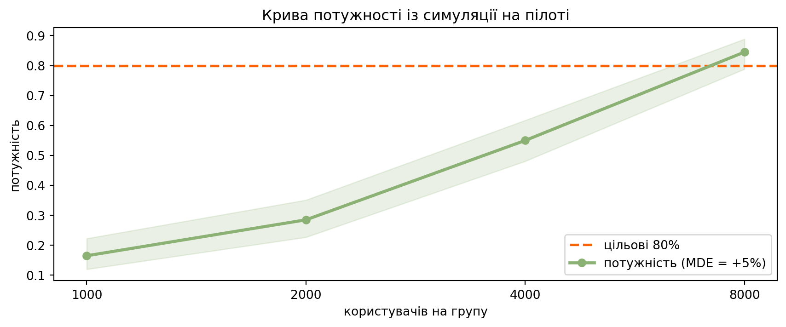

На лекції бутстреп дав нам ДІ в хвилинах: різниця P75 часу очікування таксі. Але в реальному A/B-звіті бізнес читає інший рядок: «на скільки відсотків виросла виручка — і чи окупається фіча». Сьогодні добудовуємо шлях від лекційного рецепта до готового рішення:
відносний ефект (uplift, %) — ДІ для \(\theta_T/\theta_C - 1\), статистики, в якої випадкові і чисельник, і знаменник;
пуассонівський бутстреп — як індустрія (Google, Spotify) ресемплить мільярд рядків, не тримаючи їх у пам’яті;
дизайн експерименту симуляцією — потужність і MDE для метрик, у яких формули потужності просто не існує;
ab_report — фінальний інструмент: тризонне рішення проти порога окупності, ймовірність окупності та очікувана цінність.
ПриміткаПравила гри
Наскрізний кейс: GreenBowl (той самий, що в Практиках 4–8) запускає «Безкоштовну доставку від 300 грн». Метрика — ARPU за 2 тижні.
Дані генеруємо самі — знаємо «правду» і можемо перевіряти чесність кожної версії інструмента Монте-Карло (звичка з Практики 5).
Перед кожним результатом — 🔮 «Спершу вгадайте»: запишіть відповідь до запуску коду. Після — «Ваша черга» зі згорнутим розв’язанням.
З лекції беремо лише ідею центрального ДІ\(CI = \big(2\widehat\theta - \theta^*_{[1-\alpha/2]},\,
2\widehat\theta - \theta^*_{[\alpha/2]}\big)\) — решту машинерії збираємо під нову задачу.
1 Частина I — Uplift: скільки відсотків ми виграли?
Кейс. GreenBowl два тижні тестує у Києві «Безкоштовну доставку від 300 грн»: по 6000 користувачів у контролі та тесті. Фінансисти порахували: субсидія доставки коштуватиме ≈3% річної виручки, тож фіча окупна, лише якщо піднімає ARPU більш ніж на +3% — це наш breakeven. CFO чекає відповідь у відсотках, а не в гривнях.
На лекції ми будували ДІ для різниці\(\theta_T - \theta_C\) у хвилинах. Може, просто поділити межі цього ДІ (у гривнях) на \(\bar X_C\) — і назвати результат «довірчим інтервалом у відсотках»? Що тут може піти не так?
Пастка в тому, що \(\bar X_C\) — теж випадкова величина. Поділивши межі на «заморожене» число, ми вдаємо, що знаменник відомий точно, і викидаємо частину невизначеності. Відношення
— це окрема статистика, для якої немає підручникової формули ДІ. Але ж у нас є універсальний рецепт: рахуй статистику цілком на кожній парі бутстреп-вибірок — і збирай центральний ДІ.
1.1 Інструмент v1: uplift_ci
def uplift_ci(control, test, stat=np.mean, alpha=0.05, B=4000, seed=42):"""Центральний бутстреп-ДІ для відносного ефекту stat(T)/stat(C) - 1. stat має приймати axis (np.mean, np.median, ...). Ресемпл — усередині кожної групи, незалежно (правило з лекції!). """ rng = np.random.default_rng(seed) c, t = np.asarray(control, float), np.asarray(test, float) up_hat = stat(t) / stat(c) -1 c_star = stat(rng.choice(c, size=(B, c.size), replace=True), axis=1) t_star = stat(rng.choice(t, size=(B, t.size), replace=True), axis=1) up_star = t_star / c_star -1# відношення ЦІЛКОМ q_lo, q_hi = np.quantile(up_star, [alpha/2, 1- alpha/2])return {"uplift": up_hat, "ci": (2*up_hat - q_hi, 2*up_hat - q_lo),"star": up_star}r = uplift_ci(control, test)lo, hi = r["ci"]print(f"uplift ARPU: {r['uplift']:+.2%} 95% ДІ: ({lo:+.2%}, {hi:+.2%})")
Майже збіглося? Так — але це везіння малого ефекту: за uplift ~5% знаменник хитається слабо відносно чисельника. Зробимо стрес-тест: менша вибірка, більший ефект.
Нижня межа: чесна +1%, наївна +5%. Якби breakeven був +3%, наївний інтервал «довів би» окупність, якої дані не доводять. Помилка б’є саме туди, куди дивиться бізнес — у нижню межу. Правило: статистика, яку звітуєте, має рахуватися цілком усередині кожної бутстреп-ітерації.
ПорадаВаша черга 1
Порахуйте uplift для медіани ARPU (stat=np.median). Чому ДІ ширший, ніж для середнього, хоча медіана «стійкіша»?
A/A-тест. Згенеруйте два контролі без ефекту (свіжий rng) і прогоніть uplift_ci. Що має показати чесний інструмент?
Кейс. Сформулюйте два речення для CFO: точкова оцінка, інтервал і чого ці два тижні ще не довели.
Інтерпретація. (1) Медіана дискретно «перестрибує» між сусідніми спостереженнями, тож її бутстреп-розподіл грубіший, а ДІ ширший — стійкість до викидів не означає меншу дисперсію оцінки. (2) ДІ накриває нуль: на нульовому ефекті інструмент не вигадує перемог. (3) Наприклад: «ARPU виріс на +5.2%, 95% ДІ (+1.5%, +8.8%) — зростання реальне, але окупність (+3%) ще не доведена: нижня межа інтервалу нижча за breakeven.»
2 Частина II — Пуассонівський бутстреп: A/B на мільярд рядків
Кейс. Київ — це 12 тис. користувачів у пам’яті одного ноутбука. Але GreenBowl хоче той самий звіт по всій країні: сотні мільйонів рядків у розподіленому сховищі. rng.choice по всій вибірці вимагає бачити всі дані одразу — на кластері з шардами це саме те, чого робити не можна.
Погляньмо на звичайний ресемпл під іншим кутом. Скільки разів конкретний користувач потрапляє в одну бутстреп-вибірку? Це \(W_i \sim \text{Binom}(N, \tfrac1N)\), а за великих \(N\)
Тож замість «тягнути індекси з поверненням» можна кожному рядку незалежно видати випадкову вагу \(W_i \sim \text{Pois}(1)\) — і порахувати зважену статистику. Жодного спільного стану між рядками: кожен шард важить свої рядки сам, редьюсер складає суми. Так бутстреп їздить у прод у Google та Spotify.
Порада🔮 Спершу вгадайте
Яка частка користувачів у пуассонівській ітерації отримає вагу \(W = 0\)? (Підказка: одне відоме число з лекції.)
Наскільки відрізнятимуться ДІ класичного і пуассонівського движків на київських даних?
2.1 Інструмент v2: uplift_ci_pois
def uplift_ci_pois(control, test, alpha=0.05, B=4000, seed=42):"""Пуассонівський бутстреп-ДІ для uplift СЕРЕДНІХ: ваги W ~ Pois(1). Зважене середнє = (w @ x) / w.sum() — лише суми, тож рахується за один прохід по даних і паралелиться по шардах. """ rng = np.random.default_rng(seed) c, t = np.asarray(control, float), np.asarray(test, float) up_hat = t.mean() / c.mean() -1 wc = rng.poisson(1.0, size=(B, c.size)) wt = rng.poisson(1.0, size=(B, t.size)) c_star = wc @ c / wc.sum(axis=1) t_star = wt @ t / wt.sum(axis=1) up_star = t_star / c_star -1 q_lo, q_hi = np.quantile(up_star, [alpha/2, 1- alpha/2])return {"uplift": up_hat, "ci": (2*up_hat - q_hi, 2*up_hat - q_lo),"star": up_star, "w0": (wc ==0).mean()}r_pois = uplift_ci_pois(control, test)print(f"класичний ДІ: ({r['ci'][0]:+.2%}, {r['ci'][1]:+.2%})")print(f"пуассонівський ДІ: ({r_pois['ci'][0]:+.2%}, {r_pois['ci'][1]:+.2%})")print(f"частка ваг W=0: {r_pois['w0']:.1%} (e^-1 = {np.exp(-1):.1%})")
Інтервали практично збігаються, а частка «невикористаних» рядків — ті самі лекційні \(e^{-1} \approx 36.8\%\): пуассонівський бутстреп — це той самий ресемпл із поверненням, лише записаний через ваги.
ПриміткаОбмеження
Один прохід і ваги працюють для статистик, що складаються з сум: середні, частки, суми, відношення сум. Для медіани чи перцентиля знадобився б зважений квантиль — це можливо, але одно-прохідна магія зникає. Тому в індустрії квантильні метрики на великих даних часто замінюють частками: «% замовлень довших за 45 хв» замість P75.
ПорадаВаша черга 2
Сумарна «кількість» рядків у пуассонівській ітерації — \(\sum_i W_i \sim \text{Pois}(N) \approx N \pm \sqrt N\), тобто не рівно \(N\). Лекційне FAQ казало: ресемпл іншого розміру імітує чужу помилку. Чому тут це не ламає метод? (Порівняйте \(\sqrt N\) із \(N\).)
Великі клієнти. Продакт питає: чи стало більше користувачів, що назамовляли понад 600 грн? Це частка — отже, зважується. Побудуйте пуассонівський ДІ для uplift цієї частки.
Кейс. Поясніть колезі-інженеру одним абзацом, чому пуассонівський варіант можна порахувати SQL-запитом із GROUP BY, а класичний — ні.
ПриміткаРозв’язання 2
# (1) розкид розміру відносно N зникає як 1/sqrt(N)N = control.sizeprint(f"(1) sqrt(N)/N = {np.sqrt(N)/N:.3f} — відхилення ~1.3% від N; "f"внесок у дисперсію промаху другого порядку")print(f" std(uplift*): класичний {r['star'].std():.4f}, "f"пуассонівський {r_pois['star'].std():.4f}")# (2) частка користувачів із виручкою > 600 грнthr =600pc, pt = (control > thr).mean(), (test > thr).mean()rng2 = np.random.default_rng(42)wc = rng2.poisson(1.0, size=(4000, control.size))wt = rng2.poisson(1.0, size=(4000, test.size))pc_star = wc @ (control > thr) / wc.sum(axis=1)pt_star = wt @ (test > thr) / wt.sum(axis=1)up_hat = pt / pc -1q_lo, q_hi = np.quantile(pt_star / pc_star -1, [0.025, 0.975])print(f"(2) частка >600 грн: {pc:.1%} -> {pt:.1%}, "f"uplift {up_hat:+.1%}, ДІ ({2*up_hat - q_hi:+.1%}, {2*up_hat - q_lo:+.1%})")
(1) sqrt(N)/N = 0.013 — відхилення ~1.3% від N; внесок у дисперсію промаху другого порядку
std(uplift*): класичний 0.0188, пуассонівський 0.0188
(2) частка >600 грн: 27.7% -> 30.0%, uplift +8.5%, ДІ (+2.1%, +14.3%)
Інтерпретація. (1) Розмір гуляє на \(\pm\sqrt N\), але відносно \(N\) це \(1/\sqrt N \to 0\): розподіли промахів двох движків збігаються (порівняйте std). (2) «Великих» клієнтів стало на ~8% більше — фіча працює саме там, де їй належить: на кошиках біля порога 300 грн і вище. (3) Вага \(W_i\) генерується з hash(user_id, b) незалежно для кожного рядка, тож SUM(w*x) / SUM(w) по групах — звичайна агрегація; класичному ресемплу потрібен глобальний довільний доступ до всіх рядків одночасно.
3 Частина III — Чи чесний наш движок? Монте-Карло
Ми зібрали два движки з нуля — і, за звичкою курсу, не віримо жодному на слово. Стенд той самий, що в Практиках 5–8: симулюємо світи, де правду знаємо ми, і рахуємо, як часто інструмент помиляється.
def rate_uplift(engine, n, uplift=0.0, n_exps=400, B=800, alpha=0.05, seed=1):"""Частка експериментів, де ДІ НЕ накрив нуль (+ інтервал Уілсона). uplift=0 -> A/A-світи, rate = FPR (чесний движок ~ alpha). uplift>0 -> rate = потужність на ефекті такого розміру. """ rng, rej = np.random.default_rng(seed), 0for i inrange(n_exps): c = arpu_sample(n, rng) t = arpu_sample(n, rng, uplift=uplift) lo, hi = engine(c, t, B=B, seed=seed + i)["ci"] rej += (lo >0) or (hi <0) lo, hi = proportion_confint(rej, n_exps, method="wilson")return {"rate": rej / n_exps, "ci": (lo, hi)}
Порада🔮 Спершу вгадайте
Ми двічі порушили «пряму лінію» лекції: статистика — відношення, ваги — пуассонівські. Чи втримають обидва движки FPR ≈ 5% на A/A-світах?
for name, engine in [("класичний ", uplift_ci), ("пуассонів.", uplift_ci_pois)]: f = rate_uplift(engine, n=1500)print(f"{name}: FPR = {f['rate']:.3f} "f"Уілсон ({f['ci'][0]:.3f}, {f['ci'][1]:.3f})")
Обидва тримають \(\alpha\) — маємо право користуватись. Це не формальність: у Частині I ми бачили, як «дрібна» зміна (поділити на заморожене середнє) непомітно псує нижню межу. Єдиний спосіб знати — перевірити.
ПорадаВаша черга 3
Той самий стенд, але з ефектом: rate_uplift(uplift_ci_pois, 1500, uplift=0.05). Яка потужність на київському розмірі ефекту при n=1500 на групу?
Що це означає для міського менеджера, який «просто запустив на два тижні» експеримент у невеликому місті та отримав незначущий результат?
Інтерпретація. (1) Лише ~чверть таких експериментів упіймає реальний +5%. (2) «Незначуще» при n=1500 — це очікуваний результат навіть якщо фіча працює: три з чотирьох таких запусків закінчаться нічим. Скільки ж користувачів треба? Це питання дизайну — Частина IV.
4 Частина IV — Дизайн наступного експерименту: Львів
Кейс. Фічу хочуть везти до Львова. З логів є пілот: 1500 львівських користувачів на старій доставці (фіча там ще не вмикалась). Команда хоче впевнено ловити ефект київського масштабу — design-MDE = +5%. Питання: скільки користувачів на групу потрібно?
Для середнього є формула розміру вибірки. Для відношення двох середніх зі скошеного розподілу з чвертю нулів — формули немає. Але в нас є пілот і бутстреп: ресемпл пілоту — це «світ, схожий на Львів», у який ми можемо вживити будь-який ефект і виміряти потужність напряму.
ВажливоНе плутайте два пороги
Breakeven (+3%) — поріг рішення: із ним порівнюємо ДІ після експерименту. Design-MDE (+5%) — поріг планування: найменший ефект, який хочемо надійно ловити, з нього рахуємо \(n\)до експерименту. Вимагати «нижня межа ДІ має перевищити MDE» — систематично хоронити окупні фічі: для рішення досить breakeven.
4.1 Інструмент v3: power_sim
def power_sim(pilot, uplift, n, n_exps=200, B=800, seed=1):"""Потужність симуляцією: ресемпл пілоту як 'світ' + вживлений uplift.""" rng, hits = np.random.default_rng(seed), 0 pilot = np.asarray(pilot, float)for i inrange(n_exps): c = rng.choice(pilot, n, replace=True) t = rng.choice(pilot, n, replace=True) * (1+ uplift) hits += uplift_ci_pois(c, t, B=B, seed=seed + i)["ci"][0] >0 lo, hi = proportion_confint(hits, n_exps, method="wilson")return {"power": hits / n_exps, "ci": (lo, hi)}rng_pilot = np.random.default_rng(21)pilot = arpu_sample(1500, rng_pilot) # львівський лог, фічі ще немаєprint(f"пілот: ARPU {pilot.mean():.0f} грн, нулів {np.mean(pilot ==0):.0%}")
пілот: ARPU 437 грн, нулів 25%
Порада🔮 Спершу вгадайте
Порядок величини: скільки користувачів на групу треба Львову, щоб ловити +5% із потужністю 80% — сотні, тисячі чи десятки тисяч?
sizes = [1000, 2000, 4000, 8000]curve = [power_sim(pilot, uplift=0.05, n=n) for n in sizes]for n, pw inzip(sizes, curve):print(f"n = {n:5d}: потужність {pw['power']:.2f} "f"({pw['ci'][0]:.2f}, {pw['ci'][1]:.2f})")
n = 1000: потужність 0.17 (0.12, 0.22)
n = 2000: потужність 0.28 (0.23, 0.35)
n = 4000: потужність 0.55 (0.48, 0.62)
n = 8000: потужність 0.84 (0.79, 0.89)
Код
fig, ax = plt.subplots(figsize=(9, 3.8))xt = np.arange(len(sizes))band = np.array([pw["ci"] for pw in curve])ax.axhline(0.8, color=red, lw=2, ls="--", label="цільові 80%")ax.plot(xt, [pw["power"] for pw in curve], color=green, lw=2.5, marker="o", label="потужність (MDE = +5%)")ax.fill_between(xt, band[:, 0], band[:, 1], color=green, alpha=0.18)ax.set_xticks(xt, sizes)ax.set_xlabel("користувачів на групу")ax.set_ylabel("потужність")ax.set_title("Крива потужності із симуляції на пілоті")ax.legend()plt.tight_layout()plt.show()

80% досягається біля n ≈ 8000 на групу. І навпаки — можна зафіксувати \(n\) і спитати, який ефект ми ще ловимо: це MDE при заданому n.
n_fix =4000for u in (0.03, 0.04, 0.05, 0.06, 0.07, 0.08): pw = power_sim(pilot, uplift=u, n=n_fix) flag =" <- ~80%"if0.75<= pw["power"] <=0.85else""print(f"uplift {u:+.0%}: потужність {pw['power']:.2f}{flag}")
uplift +3%: потужність 0.24
uplift +4%: потужність 0.41
uplift +5%: потужність 0.55
uplift +6%: потужність 0.71
uplift +7%: потужність 0.81 <- ~80%
uplift +8%: потужність 0.90
При n = 4000 надійно ловляться лише ефекти від ≈+7%: менший бюджет трафіку — грубіша «лінійка».
ВажливоСпіймай помилку 🕵️
Поки ми планували, нетерплячий львівський менеджер уже запустив експеримент на два тижні: по 700 користувачів у групі.
rng_l = np.random.default_rng(17)c_lv = arpu_sample(700, rng_l)t_lv = arpu_sample(700, rng_l, uplift=0.05) # ефект насправді Єr_lv = uplift_ci_pois(c_lv, t_lv)se = r_lv["star"].std()z = r_lv["uplift"] / sep =2* (1- norm.cdf(abs(z)))print(f"uplift {r_lv['uplift']:+.2%}, "f"ДІ ({r_lv['ci'][0]:+.2%}, {r_lv['ci'][1]:+.2%}), p ~ {p:.2f}")print(f"'потужність при спостереженому ефекті': "f"{norm.cdf(abs(z) - norm.ppf(0.975)):.2f}")
uplift +4.30%, ДІ (-6.23%, +14.11%), p ~ 0.41
'потужність при спостереженому ефекті': 0.13
Аналітик А: «ДІ накрив нуль, але дивіться: потужність при спостережених +4.3% — лише 13%! Тест просто сліпий, ефект напевно реальний — пропоную зарахувати перемогу.»
Аналітик Б: «“Потужність при спостереженому ефекті” — це той самий p-value, перевдягнений у відсотки. Вона рахується з \(z\), а \(z\) — це монотонна функція \(p\). Дивіться:
Великий \(p\) ⇒ мала “пост-хок потужність” — завжди, за будь-яких даних. Нової інформації тут нуль, а звучить як виправдання будь-якого провалу. Чесний висновок інший: із n=700 потужність на design-MDE була ~10–15% апріорі — експеримент не мав шансів і не мав запускатися. Потужність рахують до експерименту на пілоті, а не після — на результаті.»
Хто має рацію? Аналітик Б. Пост-хок потужність не додає нічого до \(p\); а «ефект напевно реальний» із ДІ \((-6\%, +14\%)\) — видавання бажаного за дійсне. Єдиний робочий висновок: перезапустити з \(n\), порахованим через power_sim.
ПорадаВаша черга 4
Львів дає ~2000 нових користувачів на групу за тиждень. Скільки тижнів триватиме чесний експеримент під design-MDE +5%?
А якщо команда захоче ловити самий breakeven +3% (тобто MDE = 3%)? Оцініть потужність при n = 16000 і зробіть висновок: чекати чи міняти план?
ПриміткаРозв’язання 4
# (1) з кривої: 80% біля n=8000 -> 8000/2000 = 4 тижніprint("(1) ~8000 на групу / 2000 на тиждень = ~4 тижні")# (2) MDE = breakeven = +3%pw = power_sim(pilot, uplift=0.03, n=16000, n_exps=150)print(f"(2) потужність(+3%, n=16000) = {pw['power']:.2f} "f"({pw['ci'][0]:.2f}, {pw['ci'][1]:.2f})")
(1) ~8000 на групу / 2000 на тиждень = ~4 тижні
(2) потужність(+3%, n=16000) = 0.71 (0.64, 0.78)
Інтерпретація. (1) Чотири тижні — і це чесна ціна: двотижневий запуск на 700 користувачів був театром, а не експериментом. (2) Навіть 16 тис. на групу (8 тижнів!) дають лише ~70%: ловити +3% у Львові — нереалістичний план. Розумні варіанти: планувати під більший MDE, об’єднати міста або подовжити вікно метрики. Це рішення дизайну, і ухвалюється воно зараз, а не після провалу.
5 Частина V — Фінал: ab_report
Повертаємось до київської інтриги з Розділ 1: uplift +5.2%, ДІ (+1.5%, +8.8%), breakeven +3% — усередині інтервалу.
Порада🔮 Спершу вгадайте
Ефект «статистично значущий» (ДІ не накриває нуль). Чи означає це, що фічу треба викочувати?
Значущість проти нуля — не той поріг: гроші порівнюють із breakeven. Але й бінарне «нижня межа вище/нижче +3%» викидає половину інформації. Зберемо все, що вміємо, у фінальний інструмент: три зони замість двох, ймовірність окупності та очікувану цінність.
def ab_report(control, test, breakeven, annual_revenue, alpha=0.05, B=4000, seed=42):"""Фінальний A/B-звіт: uplift, ДІ, тризонне рішення, P(окупно), EV. Зони: SHIP якщо весь ДІ вище breakeven; KILL якщо весь нижче; інакше СІРА ЗОНА. P(окупно) і EV — з бутстреп-розподілу uplift*. """ r = uplift_ci_pois(control, test, alpha=alpha, B=B, seed=seed) lo, hi = r["ci"] star = r["star"] zone = ("SHIP — котимо"if lo > breakeven else"KILL — вимикаємо"if hi < breakeven else"СІРА ЗОНА — потрібні ще дані") p_be = (star >= breakeven).mean() # P(ефект >= breakeven) ev = annual_revenue * (star.mean() - breakeven) # очікувана чиста цінністьprint(f"uplift: {r['uplift']:+.2%}")print(f"95% ДІ: ({lo:+.2%}, {hi:+.2%}) breakeven {breakeven:+.0%}")print(f"рішення: {zone}")print(f"P(окупно): {p_be:.0%}")print(f"EV за рік: {ev/1e6:+.1f} млн грн")return {"uplift": r["uplift"], "ci": (lo, hi), "zone": zone,"p_breakeven": p_be, "ev": ev}R_YEAR =430*26*80_000# ARPU/2 тижні * 26 * київська база = ~0.9 млрдrep = ab_report(control, test, breakeven=0.03, annual_revenue=R_YEAR)
uplift: +5.21%
95% ДІ: (+1.40%, +8.73%) breakeven +3%
рішення: СІРА ЗОНА — потрібні ще дані
P(окупно): 88%
EV за рік: +19.9 млн грн
Читаємо звіт цілком: рішення «ship зараз» дані не підтверджують (нижня межа нижча за breakeven), але це не провал — окупність імовірна на ~88%, а очікувана цінність запуску +20 млн грн на рік. Раціональна дія в сірій зоні — не викинути фічу, а докупити точності: продовжити експеримент, розмір добору порахувати через power_sim (Частина IV — уже на цих даних як пілоті).
ПорадаВаша черга 5 — фінальний кейс
Команда продовжила київський експеримент ще на два тижні: тепер по 12 000 користувачів у групі (default_rng(9), той самий +5% в генераторі).
Прогоніть ab_report на повних даних. Яка зона тепер? Що з P(окупно) та EV?
Чутливість до економіки. Фінансисти перерахували субсидію: якщо насправді breakeven = +6%, яким стає звіт? Сформулюйте рішення для обох сценаріїв одним реченням кожне.
(1) breakeven +3%:
uplift: +5.90%
95% ДІ: (+3.20%, +8.44%) breakeven +3%
рішення: SHIP — котимо
P(окупно): 99%
EV за рік: +25.9 млн грн
(2) breakeven +6%:
uplift: +5.90%
95% ДІ: (+3.20%, +8.44%) breakeven +6%
рішення: СІРА ЗОНА — потрібні ще дані
P(окупно): 46%
EV за рік: -0.9 млн грн
Інтерпретація. (1) Подвоєння вибірки звузило ДІ до (+3.2%, +8.4%) — нижня межа перетнула breakeven: SHIP, окупність практично певна (~99%), EV ~ +26 млн грн/рік. (2) Ті самі дані, інша економіка: при breakeven +6% ДІ знову обіймає поріг, P(окупно) ~ 46%, EV від’ємний — «розкатуємо» v1: «За breakeven +3% — викочуємо: окупність доведена, EV +26 млн/рік. За breakeven +6% — не викочуємо і не ховаємо: шансів окупитися менше половини, рішення потребує або дешевшої субсидії, або ще даних.» Статистика та сама — рішення робить економіка.
Пастки + чек-лист
Пастка
Чому це боляче
Що робити
Поділити межі ДІ різниці на \(\bar X_C\)
знаменник теж випадковий; бреше нижня межа — саме та, на яку дивиться бізнес
рахувати відношення всередині кожної бутстреп-ітерації
Порівнювати ДІ з нулем, коли фіча коштує грошей
«значуще» ≠ «окупне»
поріг рішення — breakeven, три зони замість двох
Вимагати «нижня межа > design-MDE»
систематичні хибнонегативи на окупних фічах
MDE — для планування \(n\), breakeven — для рішення
«Потужність при спостереженому ефекті»
детермінована функція \(p\)-value, нуль нової інформації
потужність рахують до експерименту, на пілоті (power_sim)
Пуассонівські ваги для медіани «в лоб»
зважений квантиль ≠ зважена сума
для великих даних — частки/суми або окремий зважений квантиль